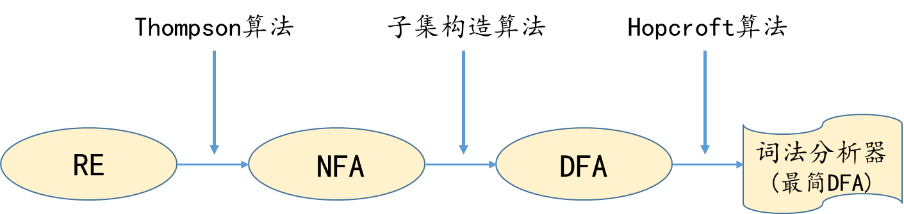

【RE】正规式3.3.1 正规式与正规集【DFA】确定的有限自动机3.3.2 【DFA】确定的有限自动机【NFA】非确定的有限自动机3.3.3 【NFA】非确定的有限自动机【正规式→NFA】汤普森算法汤普森（Thompson）算法【NFA→DFA】子集构造（Subset construction）算法子集构造法【化简DFA】霍普克罗夫特（Hopcroft）算法3.3.6 确定有限自动机的化简 Hopcroft人眼快速做法课时3：词法分析：Thompson算法，子集构造算法，Hopcroft算法_哔哩哔哩_bilibiliNFA的手动暴力化简.pdf一些证明3.3.4 正规文法与有限自动机的等价性3.3.5 正规式与有限自动机的等价性